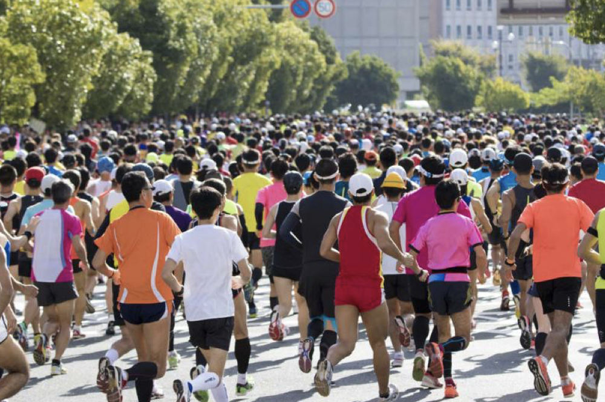
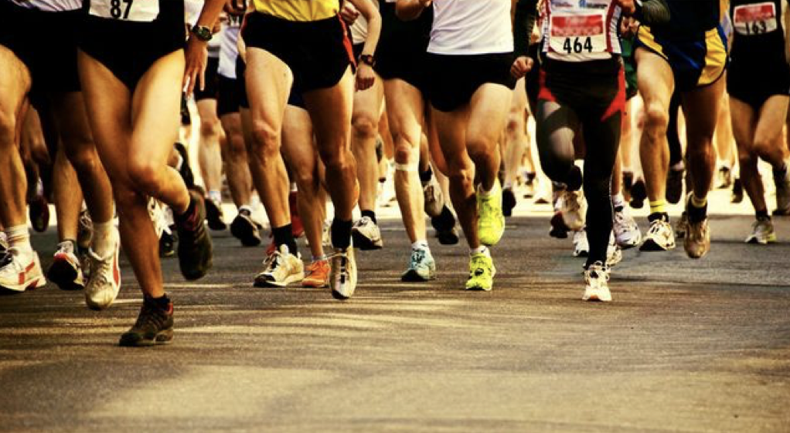
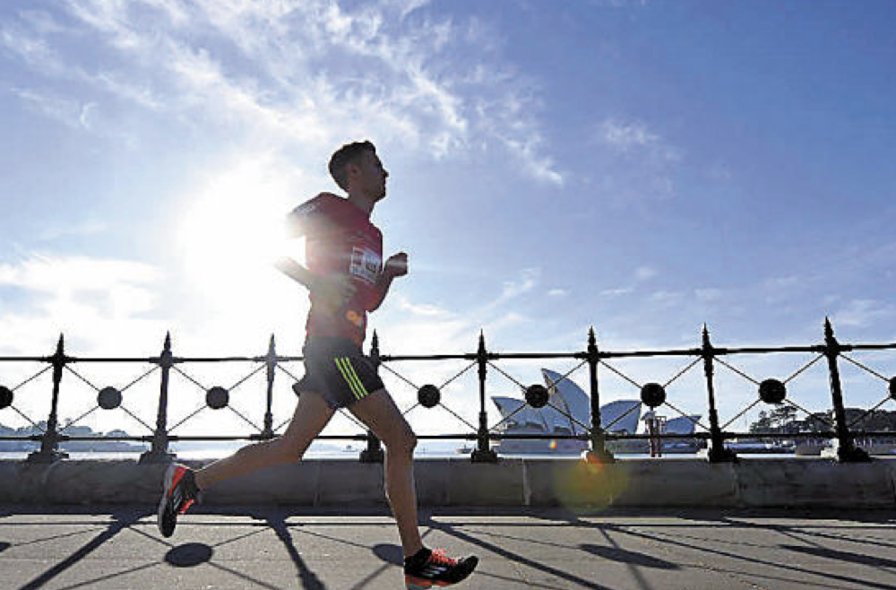
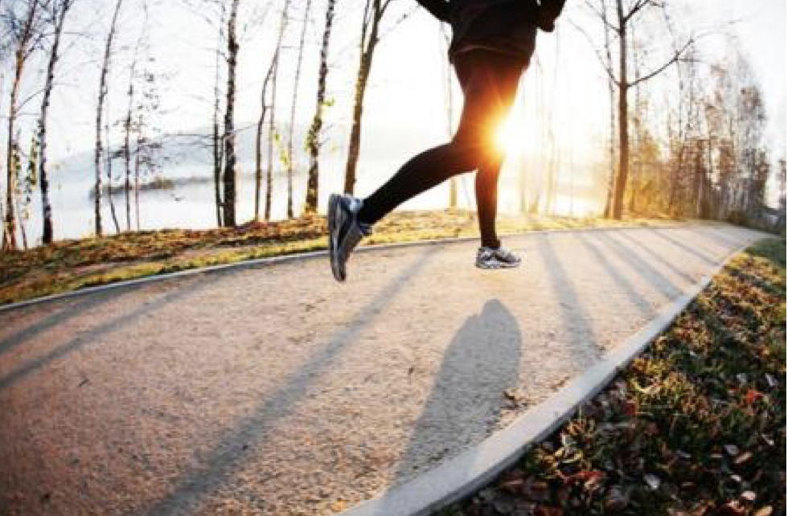

佳合家美携手2018昌平春季马拉松助力全民健康%
2018-03-22 15:38:44 来源: 综合 作者:
2018第35届昌平区春季马拉松将于4月1日在北京昌平新城滨河森林公园鸣枪开赛，本届比赛的参赛规模将达到2000人。设有男、女半程马拉松，10公里唤新跑等多个项目。
一直以来，佳合家美以能够为人类带来健康幸福而不懈努力，并高度重视企业文化建设，倡导健康生活。作为中国大健康产业的积极践行者，不仅积极组织40余名“佳合家美”人积极报名参与此次春季马拉松，佳合家美还在赛道设置产品体验区，让所有选手自由体验活力霜、平衡霜等健康养护产品，传递新的健康养护方式，共同倡导健康、活力的生活方式。

“马拉松不断超越自我、坚持到底的精神正是佳合家美的追求。”佳合家美创始人表示。“我们希望通过参与、支持马拉松赛事向消费者传达佳合家美人挑战自我、超越极限、坚韧不拔、永不放弃的马拉松精神，同时，传递全新的健康养护方式。”

人生任何时候都有“马拉松”，坚持更久、更执着的人才能取得成功。佳合家美人吸取马拉松精神，耐得住寂寞，踏踏实实搞研发，佳合家美系列产品才能经受住市场的考验。佳合家美活力霜、平衡霜自2015年上市以来，在华北、华南、东北、华中等地区受到了广泛认可，品牌知名度、美誉度和影响力不断提升。历经一年时间的市场调研与研发之后，为了满足消费者更多需求，佳合家美持续丰富产品线，2018年全面推出能量水、黄金能量面膜，全面养护国人的身体健康。

每一次持之以恒的奔跑，每一场步履不停的马拉松，都是佳合家美人奔跑在健康养护康庄大道上的剪影。未来，佳合家美将继续以成为“亿万家庭健康守护神”为目标，将健康事业进行到底，持续加大科研投入，根据国人体质及健康诉求生产更多元、高效的健康养护产品，为国人健康灌注更多能量和动力。
